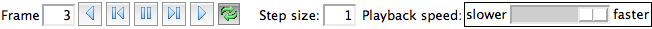

Chimera provides an interface for exploring data in Rich Molecular Format (RMF). An RMF file may include:
When an RMF file is opened in Chimera, the structure is displayed in the graphics window, and associated data and controls are shown in an RMF Viewer dialog. The dialog may contain up to three sections:
Hide hides the dialog; it can be raised later from its instance in the Tools menu. Quit closes the dialog and the structure. Help brings up this manual page in a browser window.The Hierarchy section is always present and contains the structural hierarchy and any geometric markup.
The main part of this section shows a tree of the structural objects and their groupings, with + and – signs to expand and collapse nodes, respectively. Clicking a node in the tree highlights it, and double-clicking a node selects any corresponding parts of the graphical representation and highlights/plots any corresponding features. This can be done for multiple nodes at a time (for a contiguous block: click, Shift-doubleclick; for disjoint rows: click, Ctrl-click any number of times, Ctrl-doubleclick on the last).
Buttons on the right also act on the chosen node(s):
The Features section will appear if the file includes feature annotations, which are generally restraints on the structural objects and associated values.
On the left is a tree of the features and their values, with + and – signs to expand and collapse nodes, respectively. Clicking a node in the tree highlights it, and double-clicking a node plots its value(s) in the graph on the right and highlights/selects any corresponding items in the structural hierarchy. This can be done for multiple nodes at a time (for a contiguous block: click, Shift-doubleclick; for disjoint rows: click, Ctrl-click any number of times, Ctrl-doubleclick on the last).
The graph on the right shows feature values for all (one or more) frames described in the file; if multiple frames, moving the dashed vertical line is one way to control trajectory playback.
Trajectory playback controls will be shown if the file describes more than one frame. Multiple frames could represent a time series or multiple solutions to an optimization problem.
|  |
The Step size indicates showing every Nth frame during playback. The current Frame number is reported. From left to right, the buttons mean: play backward continuously; go back one step; pause; go forward one step; play forward continuously; toggle looping (default on; lighter background when turned off). When looping is on, forward play can wrap from the end to the beginning and reverse play can wrap from the beginning to the end. The rate of continuous play can be adjusted with the Playback speed slider.
Another way to control trajectory frame display is by moving the dashed vertical line in the graph in the Features section.